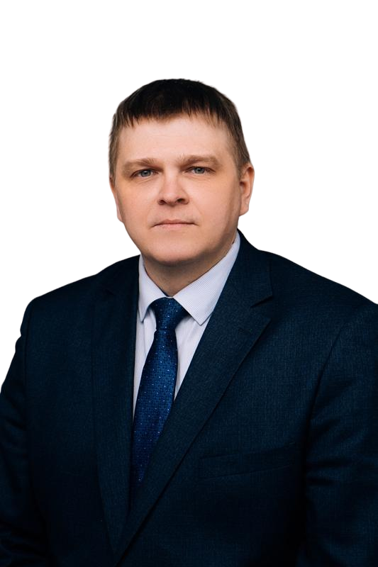
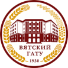
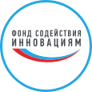
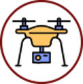

Комбинированная машина для борьбы с борщевиком Сосновского
Современные способы борьбы с вредителями
Мы эффективно решаем актуальную проблему многих регионах страны 🧐
Проект направлен на решение проблемы распространения борщевика Сосновского. Разработанное комбинированное устройство позволяет эффективно производить мульчирование и обработку, особенно на сложных участках и других территориях, включая участки сельскохозяйственного назначения.
Потребителем наших услуг и агроботов может быть кто угодно 🤝
- Сельскохозяйственные предприятия
- Предприятия по благоустройству территорий
- Коммунальные службы
- Фермерские хозяйства
Применяем современные технологии, испытанные не один раз 👨
Инновационность проекта заключается в применении роботизированной платформы с удаленным управлением.
Наши услуги
Кроме перечисленных ниже услуг мы предоставляем возможность покупки агробота в различных модификациях, а также обучение работы клиентов с установкой
Заказать услугиОбработка от борщевика
Агробот комплектуется специальной навеской с реагентами для обработки от борщевика

Обработка от клеща
Агробот комплектуется специальной навеской с реагентами для обработки от клеща
Мульчирование
Агробот комплектуется специальной навеской с реагентами для измельчения борщевика
Команда стартапа
Команда нашего стартапа состоит из талантливых и опытных разработчиков, которые специализируются на создании инновационных решений для сельского хозяйства
- 
Вылегжанин Павел Николаевич
Декан инженерного факультета ВГАТУ
Сироткин Егор Сергеевич
Основатель проекта
Козлов Андрей Николаевич
Заведующий лабораторией цифровых технологий ВГАТУ
Партнеры
Партнеры предоставляют стартапу финансовые ресуры, техническое оснащение, компонетную базу
- 
Вятский государственный агротехнологический университет
- 
Фонд содействия инновациям
Торгово-Сервисная Компания (ТСК) «Техника»
- 
Лаборатория цифровых технологий